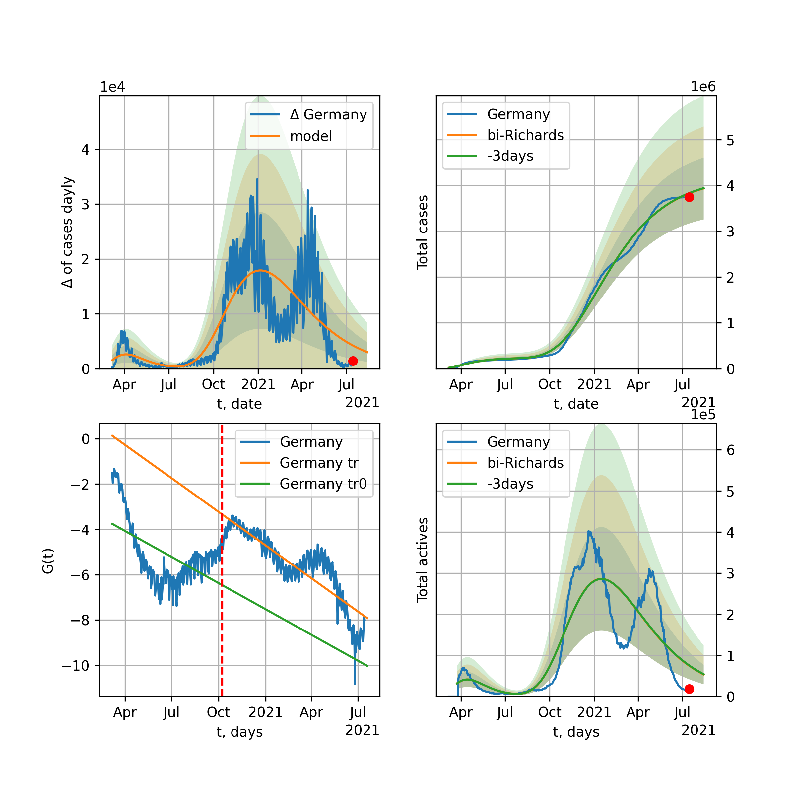
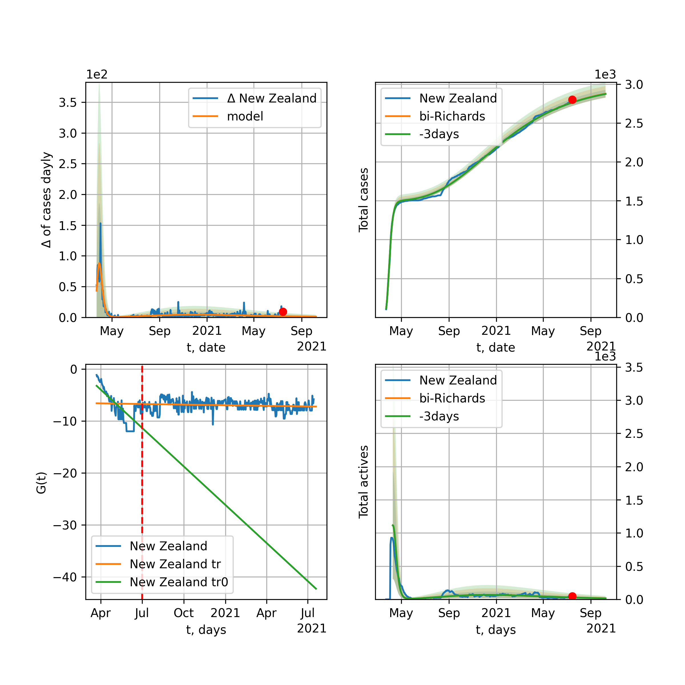

Multi-logistic model of COVID-19 dynamics
Model, code, results
Project maintained by algmaknick Hosted on GitHub Pages — Theme by mattgraham
World

World data at: 2020-06-28
+3 day model MAPE: 0.010214
model: bi-Richards
coeffs: [ 1.60113850e+07 1.52965753e+00 -5.34387447e+01 1.68560468e-02]
S.Korea scenario coeffs: [0.36242246, 2.56241634, 1.84890887, 0.13324732]
rational stdev: 0.080074
forecast at the end of period: +718 days
deltaDaycases: 6205
total cases: 26163347 ± 2095014
total death: 1287728 ± 309342
bi-Richards approximation splitting point: 50
trend coefficient of determination: 0.842057
intercept: -2.315599
slope: -0.033525
trend coefficient of determination: 0.354913
intercept: -3.837980
slope: -0.005191
European Union

European Union data at: 2020-06-28
+3 day model MAPE: 0.004314
model: bi-Richards
coeffs: [ 2.93025183e+05 3.49955018e+00 -5.02731828e+01 9.55870863e-03]
rational stdev: 0.572208
forecast at the end of period: +20 days
deltaDaycases: 1817
total cases: 1315535 ± 752759
total death: 137011 ± 235196
bi-Richards approximation splitting point: 83
trend coefficient of determination: 0.943485
intercept: -1.116060
slope: -0.057432
trend coefficient of determination: 0.011914
intercept: -5.589566
slope: -0.002931
Brazil

Brazil data at: 2020-06-28
+3 day model MAPE: 0.022416
model: Richards
coeffs: [3.83740930e+06 1.44006449e-01 3.76982933e+01 1.83501602e-01]
S.Korea scenario coeffs: [0.36242246, 2.56241634, 1.84890887, 0.13324732]
rational stdev: 0.179904
forecast at the end of period: +468 days
deltaDaycases: 3675
total cases: 4706415 ± 846701
total death: 201718 ± 108869
trend coefficient of determination: 0.868245
intercept: -3.274997
slope: -0.030920
Russia

Russia data at: 2020-06-28
+3 day model MAPE: 0.007753
model: Richards
coeffs: [ 7.96996962e+05 2.92912801e+00 -7.28827463e+01 1.20503839e-02]
S.Korea scenario coeffs: [0.36242246, 2.56241634, 1.84890887, 0.13324732]
rational stdev: 0.116037
forecast at the end of period: +538 days
deltaDaycases: 203
total cases: 1068511 ± 123987
total death: 15280 ± 5319
trend coefficient of determination: 0.974067
intercept: -1.521696
slope: -0.033027
USA

USA data at: 2020-06-28
+3 day model MAPE: 0.019945
model: bi-Richards
coeffs: [ 4.41093513e+06 2.10454262e+00 -2.22395295e+01 1.34789538e-02]
rational stdev: 0.285874
forecast at the end of period: +202 days
deltaDaycases: 822
total cases: 6497724 ± 1857529
total death: 316467 ± 271408
bi-Richards approximation splitting point: 90
trend coefficient of determination: 0.944803
intercept: -1.354389
slope: -0.042653
trend coefficient of determination: 0.697034
intercept: -7.251932
slope: 0.026390
Spain

Spain data at: 2020-06-28
+3 day model MAPE: 0.000626
model: bi-Richards
coeffs: [3.60214464e+03 1.88397010e+02 5.63738799e+01 2.99969555e-03]
rational stdev: 0.206969
forecast at the end of period: +34 days
deltaDaycases: 10
total cases: 294360 ± 60923
total death: 28200 ± 17509
bi-Richards approximation splitting point: 91
trend coefficient of determination: 0.953990
intercept: -0.681783
slope: -0.060562
trend coefficient of determination: 0.023518
intercept: -6.056187
slope: -0.006816
Italy

Italy data at: 2020-06-28
+3 day model MAPE: 0.001116
model: Richards
coeffs: [ 2.38578161e+05 7.05687618e+00 -5.62509062e+01 8.24449566e-03]
rational stdev: 0.088397
forecast at the end of period: +20 days
deltaDaycases: 21
total cases: 238220 ± 21058
total death: 34436 ± 9132
trend coefficient of determination: 0.972017
intercept: -1.256001
slope: -0.052185
United Kingdom

United Kingdom data at: 2020-06-28
+3 day model MAPE: 0.001936
model: Richards
coeffs: [ 3.21316108e+05 3.72984093e+00 -6.33620794e+01 1.21705661e-02]
S.Korea scenario coeffs: [0.36242246, 2.56241634, 1.84890887, 0.13324732]
rational stdev: 0.151563
forecast at the end of period: +328 days
deltaDaycases: 201
total cases: 423985 ± 64260
total death: 59342 ± 26982
trend coefficient of determination: 0.975010
intercept: -1.456954
slope: -0.043515
France

France data at: 2020-06-26
+3 day model MAPE: 0.001294
model: bi-Richards
coeffs: [ 2.99939995e+04 3.45606010e+00 -2.11717889e+00 1.41751307e-02]
rational stdev: 0.096663
forecast at the end of period: +22 days
deltaDaycases: 134
total cases: 166702 ± 16113
total death: 30466 ± 8834
bi-Richards approximation splitting point: 86
trend coefficient of determination: 0.905055
intercept: -0.864300
slope: -0.069061
trend coefficient of determination: 0.077534
intercept: -2.083077
slope: -0.041208
Germany

Germany data at: 2020-06-28
+3 day model MAPE: 0.004549
model: bi-Richards
coeffs: [ 2.41985357e+04 8.25165640e+00 -2.82573105e+01 5.43891054e-03]
rational stdev: 0.132111
forecast at the end of period: +34 days
deltaDaycases: 101
total cases: 200975 ± 26551
total death: 9312 ± 3690
bi-Richards approximation splitting point: 94
trend coefficient of determination: 0.950736
intercept: -1.414521
slope: -0.061090
trend coefficient of determination: 0.069049
intercept: -8.784354
slope: 0.024628
Turkey

Turkey data at: 2020-06-28
+3 day model MAPE: 0.002281
model: bi-Richards
coeffs: [ 9.23144994e+04 2.76948274e+00 -1.39799862e+01 1.35838940e-02]
rational stdev: 0.198928
forecast at the end of period: +104 days
deltaDaycases: 65
total cases: 251834 ± 50096
total death: 6507 ± 3883
bi-Richards approximation splitting point: 75
trend coefficient of determination: 0.781557
intercept: -0.990658
slope: -0.058413
trend coefficient of determination: 0.236830
intercept: -5.926809
slope: 0.007804
Iran

Iran data at: 2020-06-28
+3 day model MAPE: 0.008302
model: bi-Richards
coeffs: [ 1.74648530e+05 3.82673629e+00 -1.04613835e+01 1.07722581e-02]
S.Korea scenario coeffs: [0.36242246, 2.56241634, 1.84890887, 0.13324732]
rational stdev: 0.264765
forecast at the end of period: +412 days
deltaDaycases: 193
total cases: 324546 ± 85928
total death: 15315 ± 12164
bi-Richards approximation splitting point: 75
trend coefficient of determination: 0.949242
intercept: -0.910572
slope: -0.055074
trend coefficient of determination: 0.309855
intercept: -3.738019
slope: -0.006143
Canada

Canada data at: 2020-06-28
+3 day model MAPE: 0.000528
model: Richards
coeffs: [ 1.09814942e+05 3.25297881e+00 -7.13068588e+01 1.30248285e-02]
S.Korea scenario coeffs: [0.36242246, 2.56241634, 1.84890887, 0.13324732]
rational stdev: 0.155665
forecast at the end of period: +420 days
deltaDaycases: 26
total cases: 147763 ± 23001
total death: 12196 ± 5695
trend coefficient of determination: 0.982587
intercept: -1.575345
slope: -0.044311
South Africa

South Africa data at: 2020-06-28
+3 day model MAPE: 0.016631
model: bi-Richards
coeffs: [7.44150920e+06 1.01186182e-01 9.73370680e+01 1.54716427e-01]
rational stdev: 0.276396
forecast at the end of period: +426 days
deltaDaycases: 821
total cases: 7390671 ± 2042749
total death: 131404 ± 108958
bi-Richards approximation splitting point: 30
trend coefficient of determination: 0.524779
intercept: -1.234287
slope: -0.109109
trend coefficient of determination: 0.246621
intercept: -4.024268
slope: -0.006526
Belgium

Belgium data at: 2020-06-28
+3 day model MAPE: 0.001935
model: Richards
coeffs: [ 6.04218081e+04 6.26687163e+00 -4.68102446e+01 1.03042703e-02]
S.Korea scenario coeffs: [0.36242246, 2.56241634, 1.84890887, 0.13324732]
rational stdev: 0.398820
forecast at the end of period: +244 days
deltaDaycases: 22
total cases: 81291 ± 32420
total death: 12906 ± 15441
trend coefficient of determination: 0.846723
intercept: -1.250033
slope: -0.056814
Peru

Peru data at: 2020-06-28
+3 day model MAPE: 0.001785
model: Richards
coeffs: [3.61853695e+05 1.09110169e-01 5.68803720e+01 4.15209208e-01]
S.Korea scenario coeffs: [0.36242246, 2.56241634, 1.84890887, 0.13324732]
rational stdev: 0.347328
forecast at the end of period: +468 days
deltaDaycases: 26
total cases: 491303 ± 170643
total death: 16382 ± 17069
trend coefficient of determination: 0.913543
intercept: -3.508593
slope: -0.059841
Netherlands

Netherlands data at: 2020-06-28
+3 day model MAPE: 0.000076
model: bi-Richards
coeffs: [4.60456306e+03 5.11678521e+00 4.27255833e+01 1.66709588e-02]
rational stdev: 0.129392
forecast at the end of period: +20 days
deltaDaycases: 13
total cases: 50782 ± 6570
total death: 6182 ± 2399
bi-Richards approximation splitting point: 75
trend coefficient of determination: 0.961822
intercept: -0.856738
slope: -0.062578
trend coefficient of determination: 0.469535
intercept: -3.961660
slope: -0.021103
India

India data at: 2020-06-28
+3 day model MAPE: 0.014010
model: Richards
coeffs: [ 5.87492171e+06 3.32122511e-01 -5.16260150e+01 4.15863276e-02]
S.Korea scenario coeffs: [0.36242246, 2.56241634, 1.84890887, 0.13324732]
rational stdev: 0.367952
forecast at the end of period: +1028 days
deltaDaycases: 3135
total cases: 7126329 ± 2622145
total death: 213933 ± 236151
trend coefficient of determination: 0.703317
intercept: -1.903738
slope: -0.019073
Switzerland

Switzerland data at: 2020-06-28
+3 day model MAPE: 0.003397
model: bi-Richards
coeffs: [ 3.71943454e+03 2.94833226e+00 -1.18919138e+02 6.97435060e-03]
rational stdev: 0.342934
forecast at the end of period: +34 days
deltaDaycases: 26
total cases: 32432 ± 11122
total death: 2012 ± 2069
bi-Richards approximation splitting point: 80
trend coefficient of determination: 0.962424
intercept: -1.054539
slope: -0.085051
trend coefficient of determination: 0.293304
intercept: -10.879989
slope: 0.036337
Ecuador

Ecuador data at: 2020-06-28
+3 day model MAPE: 0.014475
model: Richards
coeffs: [ 6.47718547e+04 2.50212856e+00 -1.14831877e+02 1.16420911e-02]
S.Korea scenario coeffs: [0.36242246, 2.56241634, 1.84890887, 0.13324732]
rational stdev: 0.127751
forecast at the end of period: +608 days
deltaDaycases: 16
total cases: 86574 ± 11059
total death: 6939 ± 2659
trend coefficient of determination: 0.203747
intercept: -2.582898
slope: -0.037186
Portugal

Portugal data at: 2020-06-28
+3 day model MAPE: 0.003490
model: bi-Richards
coeffs: [ 2.99993507e+04 1.72911865e+00 -4.27102013e+01 1.72651594e-02]
rational stdev: 0.052325
forecast at the end of period: +188 days
deltaDaycases: 2
total cases: 58071 ± 3038
total death: 2180 ± 342
bi-Richards approximation splitting point: 61
trend coefficient of determination: 0.904300
intercept: -1.193884
slope: -0.070239
trend coefficient of determination: 0.064987
intercept: -5.308605
slope: 0.003999
Saudi Arabia

Saudi Arabia data at: 2020-06-28
+3 day model MAPE: 0.008391
model: Richards
coeffs: [ 5.92070282e+05 1.01953596e+00 -1.15930944e+02 1.70968669e-02]
S.Korea scenario coeffs: [0.36242246, 2.56241634, 1.84890887, 0.13324732]
rational stdev: 0.306563
forecast at the end of period: +426 days
deltaDaycases: 46
total cases: 592945 ± 181775
total death: 5039 ± 4634
trend coefficient of determination: 0.233753
intercept: -2.211183
slope: -0.015787
Sweden

Sweden data at: 2020-06-26
+3 day model MAPE: 0.041117
model: bi-Richards
coeffs: [4.23657855e+04 4.42274573e+00 2.34811932e+01 1.16448704e-02]
rational stdev: 0.242565
forecast at the end of period: +85 days
deltaDaycases: 36
total cases: 93066 ± 22574
total death: 7543 ± 5489
bi-Richards approximation splitting point: 90
trend coefficient of determination: 0.851746
intercept: -1.326890
slope: -0.037331
trend coefficient of determination: 0.021416
intercept: -3.114368
slope: -0.010992
Pakistan

Pakistan data at: 2020-06-28
+3 day model MAPE: 0.005784
model: bi-Richards
coeffs: [2.19073262e+05 5.07174284e-02 1.07399612e+02 3.61109579e+00]
S.Korea scenario coeffs: [0.36242246, 2.56241634, 1.84890887, 0.13324732]
rational stdev: 0.389473
forecast at the end of period: +153 days
deltaDaycases: 141
total cases: 297869 ± 116012
total death: 6010 ± 7022
bi-Richards approximation splitting point: 25
trend coefficient of determination: 0.924591
intercept: -4.055495
slope: -0.885457
trend coefficient of determination: 0.978725
intercept: -24.334504
slope: -0.207857
Ireland

Ireland data at: 2020-06-28
+3 day model MAPE: 0.000736
model: Richards
coeffs: [2.52812195e+04 2.05495350e-01 2.15230291e+01 4.60157735e-01]
rational stdev: 0.169243
forecast at the end of period: +90 days
deltaDaycases: 0
total cases: 25281 ± 4278
total death: 1724 ± 875
trend coefficient of determination: 0.968898
intercept: -3.692760
slope: -0.089402
Mexico

Mexico data at: 2020-06-28
+3 day model MAPE: 0.003977
model: Richards
coeffs: [ 9.10021889e+05 5.01723512e-01 -7.52019860e+01 3.49622846e-02]
S.Korea scenario coeffs: [0.36242246, 2.56241634, 1.84890887, 0.13324732]
rational stdev: 0.200259
forecast at the end of period: +1098 days
deltaDaycases: 136
total cases: 1216295 ± 243574
total death: 149465 ± 89795
trend coefficient of determination: 0.910369
intercept: -2.068937
slope: -0.021959
Singapore

Singapore data at: 2020-06-28
+3 day model MAPE: 0.004025
model: bi-Richards
coeffs: [ 3.81950379e+04 4.81485044e+00 -2.51138816e+01 8.23148544e-03]
S.Korea scenario coeffs: [0.36242246, 2.56241634, 1.84890887, 0.13324732]
rational stdev: 0.258681
forecast at the end of period: +468 days
deltaDaycases: 19
total cases: 59837 ± 15478
total death: 35 ± 27
bi-Richards approximation splitting point: 60
trend coefficient of determination: 0.125491
intercept: -2.319847
slope: -0.021638
trend coefficient of determination: 0.650348
intercept: 0.369912
slope: -0.038412
Chile

Chile data at: 2020-06-28
+3 day model MAPE: 0.001933
model: Richards
coeffs: [3.15249682e+05 6.26639805e-02 5.44931635e+01 1.50467508e+00]
S.Korea scenario coeffs: [0.36242246, 2.56241634, 1.84890887, 0.13324732]
rational stdev: 0.095775
forecast at the end of period: +160 days
deltaDaycases: 272
total cases: 420752 ± 40297
total death: 8522 ± 2448
trend coefficient of determination: 0.984164
intercept: -16.487937
slope: -0.085628
Israel

Israel data at: 2020-06-28
+3 day model MAPE: 0.026552
model: bi-Richards
coeffs: [2.97002159e+04 3.46614766e+00 2.82739614e+00 1.20046498e-02]
rational stdev: 0.127890
forecast at the end of period: +118 days
deltaDaycases: 14
total cases: 46420 ± 5936
total death: 621 ± 238
bi-Richards approximation splitting point: 70
trend coefficient of determination: 0.928156
intercept: -1.000121
slope: -0.092515
trend coefficient of determination: 0.632177
intercept: -11.697802
slope: 0.074517
Austria

Austria data at: 2020-06-28
+3 day model MAPE: 0.003858
model: bi-Richards
coeffs: [ 2.52219056e+03 6.97298670e+00 -4.29739067e+01 6.86316709e-03]
rational stdev: 0.367415
forecast at the end of period: +20 days
deltaDaycases: 6
total cases: 17636 ± 6479
total death: 701 ± 772
bi-Richards approximation splitting point: 65
trend coefficient of determination: 0.933089
intercept: -1.068433
slope: -0.092201
trend coefficient of determination: 0.008321
intercept: -5.972263
slope: -0.004795
Belarus

Belarus data at: 2020-06-28
+3 day model MAPE: 0.001026
model: Richards
coeffs: [ 7.62024350e+04 2.58348181e+00 -8.14982129e+01 1.38947700e-02]
S.Korea scenario coeffs: [0.36242246, 2.56241634, 1.84890887, 0.13324732]
rational stdev: 0.173674
forecast at the end of period: +468 days
deltaDaycases: 31
total cases: 101144 ± 17566
total death: 630 ± 328
trend coefficient of determination: 0.957114
intercept: -1.717765
slope: -0.038780
Japan

Japan data at: 2020-06-28
+3 day model MAPE: 0.006717
model: bi-Richards
coeffs: [ 4.25187626e+03 5.71847241e+00 -1.11833472e+01 5.96340017e-03]
rational stdev: 0.685516
forecast at the end of period: +13 days
deltaDaycases: 41
total cases: 18840 ± 12915
total death: 994 ± 2044
bi-Richards approximation splitting point: 115
trend coefficient of determination: 0.000565
intercept: -3.626881
slope: -0.001456
trend coefficient of determination: 0.289149
intercept: -8.496358
slope: 0.018423
China

China data at: 2020-06-28
+3 day model MAPE: 0.000399
model: bi-Richards
coeffs: [1.32546912e+03 7.35766991e+01 2.70179937e+01 1.80969897e-03]
rational stdev: 0.096875
forecast at the end of period: +13 days
deltaDaycases: 0
total cases: 83099 ± 8050
total death: 4611 ± 1340
bi-Richards approximation splitting point: 110
trend coefficient of determination: 0.821005
intercept: -1.971580
slope: -0.082664
trend coefficient of determination: 0.265513
intercept: -16.650493
slope: 0.053259
Qatar

Qatar data at: 2020-06-28
+3 day model MAPE: 0.002329
model: bi-Richards
coeffs: [1.12762352e+05 9.79224243e-02 5.57772186e+01 5.48583146e-01]
S.Korea scenario coeffs: [0.36242246, 2.56241634, 1.84890887, 0.13324732]
rational stdev: 0.196196
forecast at the end of period: +328 days
deltaDaycases: 26
total cases: 152662 ± 29951
total death: 177 ± 104
bi-Richards approximation splitting point: 20
trend coefficient of determination: 0.029290
intercept: -6.937308
slope: 0.022814
trend coefficient of determination: 0.971157
intercept: -5.334456
slope: -0.054254
Poland

Poland data at: 2020-06-28
+3 day model MAPE: 0.001277
model: bi-Richards
coeffs: [ 2.35285192e+04 2.92946697e+00 -1.69235222e+01 1.40115893e-02]
rational stdev: 0.114437
forecast at the end of period: +118 days
deltaDaycases: 3
total cases: 42291 ± 4839
total death: 1793 ± 615
bi-Richards approximation splitting point: 60
trend coefficient of determination: 0.714560
intercept: -1.172878
slope: -0.047730
trend coefficient of determination: 0.624806
intercept: -2.753092
slope: -0.018122
UAE

UAE data at: 2020-06-28
+3 day model MAPE: 0.000974
model: Richards
coeffs: [5.65300223e+04 1.43911858e-01 3.24595897e+01 2.84858161e-01]
S.Korea scenario coeffs: [0.36242246, 2.56241634, 1.84890887, 0.13324732]
rational stdev: 0.261656
forecast at the end of period: +622 days
deltaDaycases: 0
total cases: 76970 ± 20139
total death: 504 ± 395
trend coefficient of determination: 0.024910
intercept: -5.763836
slope: -0.011489
Romania

Romania data at: 2020-06-28
+3 day model MAPE: 0.011812
model: bi-Richards
coeffs: [1.06513987e+04 8.07405197e-02 1.09867610e+02 1.88541398e+00]
rational stdev: 0.115775
forecast at the end of period: +62 days
deltaDaycases: 1
total cases: 30995 ± 3588
total death: 1898 ± 659
bi-Richards approximation splitting point: 76
trend coefficient of determination: 0.882969
intercept: -9.912464
slope: -0.207190
trend coefficient of determination: 0.094089
intercept: -22.744029
slope: -0.006506
Panama

Panama data at: 2020-06-28
+3 day model MAPE: 0.007517
model: bi-Richards
coeffs: [4.93553482e+04 2.20217046e+00 9.96804757e+00 1.95461703e-02]
rational stdev: 0.216987
forecast at the end of period: +76 days
deltaDaycases: 78
total cases: 61016 ± 13239
total death: 1163 ± 757
bi-Richards approximation splitting point: 70
trend coefficient of determination: 0.874631
intercept: -1.307959
slope: -0.048671
trend coefficient of determination: 0.146129
intercept: -4.610898
slope: 0.009320
Ukraine

Ukraine data at: 2020-06-28
+3 day model MAPE: 0.009739
model: bi-Richards
coeffs: [7.49757731e+04 4.81980128e-01 4.37462056e+01 8.04620430e-02]
rational stdev: 0.164447
forecast at the end of period: +223 days
deltaDaycases: 0
total cases: 102270 ± 16818
total death: 2686 ± 1325
bi-Richards approximation splitting point: 65
trend coefficient of determination: 0.726126
intercept: -1.658194
slope: -0.048587
trend coefficient of determination: 0.160372
intercept: -5.262306
slope: 0.006232
Indonesia

Indonesia data at: 2020-06-28
+3 day model MAPE: 0.010358
model: Richards
coeffs: [ 3.61402703e+05 4.73308766e-01 -1.75400488e+02 2.37756436e-02]
S.Korea scenario coeffs: [0.36242246, 2.56241634, 1.84890887, 0.13324732]
rational stdev: 0.253549
forecast at the end of period: +1196 days
deltaDaycases: 168
total cases: 431089 ± 109302
total death: 21981 ± 16719
trend coefficient of determination: 0.752511
intercept: -2.299006
slope: -0.020372
Bangladesh

Bangladesh data at: 2020-06-28
+3 day model MAPE: 0.009472
model: bi-Richards
coeffs: [4.98194895e+05 1.62302345e-01 4.12322873e+01 1.51394102e-01]
S.Korea scenario coeffs: [0.36242246, 2.56241634, 1.84890887, 0.13324732]
rational stdev: 0.406821
forecast at the end of period: +916 days
deltaDaycases: 26
total cases: 675637 ± 274863
total death: 8522 ± 10400
bi-Richards approximation splitting point: 29
trend coefficient of determination: 0.016052
intercept: -4.446964
slope: 0.034636
trend coefficient of determination: 0.876388
intercept: -1.874301
slope: -0.033652
South_Korea

South Korea data at: 2020-06-28
+3 day model MAPE: 0.000086
model: bi-Richards
coeffs: [ 7.22822252e+03 1.89675198e+00 -1.26029618e+02 9.53205657e-03]
rational stdev: 0.155309
forecast at the end of period: +118 days
deltaDaycases: 15
total cases: 16746 ± 2600
total death: 370 ± 172
bi-Richards approximation splitting point: 73
trend coefficient of determination: 0.865816
intercept: -1.347161
slope: -0.089520
trend coefficient of determination: 0.428795
intercept: -8.964103
slope: 0.027737
Moldova

Moldova data at: 2020-06-28
+3 day model MAPE: 0.012345
model: bi-Richards
coeffs: [ 3.95259112e+04 8.00866299e-01 -8.48361355e+00 3.37745366e-02]
S.Korea scenario coeffs: [0.36242246, 2.56241634, 1.84890887, 0.13324732]
rational stdev: 0.348772
forecast at the end of period: +286 days
deltaDaycases: 4
total cases: 45891 ± 16005
total death: 1496 ± 1565
bi-Richards approximation splitting point: 60
trend coefficient of determination: 0.561231
intercept: -1.529792
slope: -0.040944
trend coefficient of determination: 0.012921
intercept: -3.857797
slope: -0.002830
Denmark

Denmark data at: 2020-06-28
+3 day model MAPE: 0.002072
model: Richards
coeffs: [ 1.22659587e+04 7.57412632e-01 -2.17374814e+01 7.08529608e-02]
rational stdev: 0.283101
forecast at the end of period: +69 days
deltaDaycases: 0
total cases: 12253 ± 3468
total death: 583 ± 495
trend coefficient of determination: 0.907675
intercept: -1.842227
slope: -0.051439
Serbia

Serbia data at: 2020-06-28
+3 day model MAPE: 0.021803
model: bi-Richards
coeffs: [ 2.66981608e+04 1.35560427e+00 -5.53552008e+01 1.56208459e-02]
rational stdev: 0.130546
forecast at the end of period: +244 days
deltaDaycases: 7
total cases: 37353 ± 4876
total death: 718 ± 281
bi-Richards approximation splitting point: 60
trend coefficient of determination: 0.807807
intercept: -1.053077
slope: -0.058442
trend coefficient of determination: 0.098445
intercept: -6.181176
slope: 0.010811
Kuwait

Kuwait data at: 2020-06-28
+3 day model MAPE: 0.029895
model: Richards
coeffs: [4.99212596e+04 1.50664492e-01 5.02642232e+01 3.71246300e-01]
S.Korea scenario coeffs: [0.36242246, 2.56241634, 1.84890887, 0.13324732]
rational stdev: 2.094957
forecast at the end of period: +167 days
deltaDaycases: 117
total cases: 59008 ± 123619
total death: 456 ± 2865
trend coefficient of determination: 0.851461
intercept: -4.113194
slope: -0.037968
Philippines

Philippines data at: 2020-06-28
+3 day model MAPE: 0.013237
model: Richards
coeffs: [ 3.99611209e+05 3.49701300e-01 -2.25537671e+02 2.44284988e-02]
S.Korea scenario coeffs: [0.36242246, 2.56241634, 1.84890887, 0.13324732]
rational stdev: 0.349241
forecast at the end of period: +1504 days
deltaDaycases: 153
total cases: 461983 ± 161343
total death: 16209 ± 16982
trend coefficient of determination: 0.516905
intercept: -2.292637
slope: -0.021954
Norway

Norway data at: 2020-06-28
+3 day model MAPE: 0.052793
model: bi-Richards
coeffs: [ 6.34788184e+02 2.77785165e-02 -5.77762273e+00 2.44372495e-02]
rational stdev: 0.153941
forecast at the end of period: +20 days
deltaDaycases: 0
total cases: 8373 ± 1288
total death: 235 ± 108
bi-Richards approximation splitting point: 94
trend coefficient of determination: 0.939631
intercept: -1.036621
slope: -0.067834
trend coefficient of determination: 0.004435
intercept: -6.131644
slope: -0.006942
Czechia

Czechia data at: 2020-06-28
+3 day model MAPE: 0.026905
model: bi-Richards
coeffs: [ 7.67494484e+03 2.50377193e+00 -7.45556099e+01 1.01094683e-02]
rational stdev: 2.290518
forecast at the end of period: +118 days
deltaDaycases: 8
total cases: 15322 ± 35097
total death: 459 ± 3154
bi-Richards approximation splitting point: 61
trend coefficient of determination: 0.420048
intercept: -1.462364
slope: -0.054491
trend coefficient of determination: 0.091230
intercept: -6.051278
slope: 0.009416
Colombia

Colombia data at: 2020-06-28
+3 day model MAPE: 0.031354
model: bi-Richards
coeffs: [ 1.21565742e+06 5.29493820e-01 -7.23073861e+01 2.77939927e-02]
S.Korea scenario coeffs: [0.36242246, 2.56241634, 1.84890887, 0.13324732]
rational stdev: 0.192081
forecast at the end of period: +888 days
deltaDaycases: 812
total cases: 1390762 ± 267139
total death: 47071 ± 27124
bi-Richards approximation splitting point: 40
trend coefficient of determination: 0.753382
intercept: -1.057818
slope: -0.065280
trend coefficient of determination: 0.297849
intercept: -3.018814
slope: -0.005197
Australia

Australia data at: 2020-06-28
+3 day model MAPE: 0.008754
model: bi-Richards
coeffs: [ 1.43851309e+03 4.88341704e+00 -9.49175993e+01 6.74799327e-03]
rational stdev: 0.599328
forecast at the end of period: +20 days
deltaDaycases: 3
total cases: 7617 ± 4565
total death: 102 ± 183
bi-Richards approximation splitting point: 50
trend coefficient of determination: 0.754823
intercept: -0.971633
slope: -0.083423
trend coefficient of determination: 0.020621
intercept: -6.794058
slope: 0.005009
Malaysia

Malaysia data at: 2020-06-28
+3 day model MAPE: 0.000409
model: bi-Richards
coeffs: [2.08822474e+03 1.26706499e-01 8.25851852e+01 1.08580522e+00]
S.Korea scenario coeffs: [0.36242246, 2.56241634, 1.84890887, 0.13324732]
rational stdev: 0.138059
forecast at the end of period: +20 days
deltaDaycases: 0
total cases: 8643 ± 1193
total death: 121 ± 50
bi-Richards approximation splitting point: 70
trend coefficient of determination: 0.814470
intercept: -6.070274
slope: -0.141617
trend coefficient of determination: 0.469398
intercept: -10.438777
slope: -0.052706
Dominican Republic

Dominican Republic data at: 2020-06-28
+3 day model MAPE: 0.026424
model: Richards
coeffs: [ 7.66150039e+04 1.27707249e+00 -1.63286246e+02 1.26213918e-02]
S.Korea scenario coeffs: [0.36242246, 2.56241634, 1.84890887, 0.13324732]
rational stdev: 0.385319
forecast at the end of period: +902 days
deltaDaycases: 42
total cases: 94715 ± 36495
total death: 2191 ± 2532
trend coefficient of determination: 0.033195
intercept: -3.124449
slope: -0.007050
Egypt

Egypt data at: 2020-06-28
+3 day model MAPE: 0.011296
model: Richards
coeffs: [8.12821758e+04 5.14201425e-02 9.21480811e+01 1.96798955e+00]
S.Korea scenario coeffs: [0.36242246, 2.56241634, 1.84890887, 0.13324732]
rational stdev: 0.248442
forecast at the end of period: +188 days
deltaDaycases: 66
total cases: 108761 ± 27020
total death: 4653 ± 3468
trend coefficient of determination: 0.959077
intercept: -13.440303
slope: -0.125219
Finland

Finland data at: 2020-06-28
+3 day model MAPE: 0.000669
model: Richards
coeffs: [ 7.37213391e+03 4.48856272e-01 -1.34622621e+01 1.14570026e-01]
S.Korea scenario coeffs: [0.36242246, 2.56241634, 1.84890887, 0.13324732]
rational stdev: 0.150937
forecast at the end of period: +300 days
deltaDaycases: 1
total cases: 9954 ± 1502
total death: 453 ± 205
trend coefficient of determination: 0.881463
intercept: -1.984956
slope: -0.056847
Morocco

Morocco data at: 2020-06-28
+3 day model MAPE: 0.021412
model: bi-Richards
coeffs: [4.78430575e+03 1.16831561e+01 6.86790165e+01 1.49167036e-02]
rational stdev: 0.065899
forecast at the end of period: +34 days
deltaDaycases: 5
total cases: 14303 ± 942
total death: 262 ± 51
bi-Richards approximation splitting point: 75
trend coefficient of determination: 0.862299
intercept: -1.470553
slope: -0.048044
trend coefficient of determination: 0.499422
intercept: -9.868827
slope: 0.058469
Argentina

Argentina data at: 2020-06-28
+3 day model MAPE: 0.025273
model: bi-Richards
coeffs: [2.32770640e+06 1.44037931e-01 5.18977508e+01 9.95230063e-02]
rational stdev: 0.173533
forecast at the end of period: +468 days
deltaDaycases: 183
total cases: 2317596 ± 402179
total death: 47641 ± 24801
bi-Richards approximation splitting point: 38
trend coefficient of determination: 0.117540
intercept: -1.760888
slope: -0.078399
trend coefficient of determination: 0.000521
intercept: -4.146394
slope: 0.000231
Algeria

Algeria data at: 2020-06-28
+3 day model MAPE: 0.010689
model: bi-Richards
coeffs: [-1.12712532e+03 5.70181280e-01 7.02796815e+01 4.36303947e-01]
rational stdev: 0.194022
forecast at the end of period: +146 days
deltaDaycases: 6
total cases: 19865 ± 3854
total death: 1342 ± 781
bi-Richards approximation splitting point: 88
trend coefficient of determination: 0.891859
intercept: -4.554907
slope: -0.050149
trend coefficient of determination: 0.792124
intercept: -13.017322
slope: 0.047877
Luxembourg

Luxembourg data at: 2020-06-28
+3 day model MAPE: 0.010306
model: bi-Richards
coeffs: [ 4.04076643e+02 4.69972201e+00 -3.97709945e+01 8.45652212e-03]
rational stdev: 0.232427
forecast at the end of period: +6 days
deltaDaycases: 3
total cases: 4182 ± 972
total death: 108 ± 75
bi-Richards approximation splitting point: 75
trend coefficient of determination: 0.630581
intercept: -1.699506
slope: -0.071153
trend coefficient of determination: 0.343721
intercept: -11.570013
slope: 0.049843
Thailand

Thailand data at: 2020-06-28
+3 day model MAPE: 0.000350
model: bi-Richards
coeffs: [ 2.20162449e+02 6.08736199e+00 -4.02761650e+01 7.67493348e-03]
rational stdev: 0.071626
forecast at the end of period: +34 days
deltaDaycases: 0
total cases: 3205 ± 229
total death: 58 ± 12
bi-Richards approximation splitting point: 60
trend coefficient of determination: 0.843302
intercept: -1.248118
slope: -0.117556
trend coefficient of determination: 0.007457
intercept: -6.869435
slope: -0.010916
Hungary

Hungary data at: 2020-06-28
+3 day model MAPE: 0.000609
model: Richards
coeffs: [ 4.19641976e+03 3.58561028e+00 -4.39322504e+01 1.54087740e-02]
rational stdev: 0.441193
forecast at the end of period: +20 days
deltaDaycases: 1
total cases: 4173 ± 1841
total death: 585 ± 774
trend coefficient of determination: 0.904921
intercept: -1.160099
slope: -0.053280
Greece

Greece data at: 2020-06-28
+3 day model MAPE: 0.004843
model: bi-Richards
coeffs: [6.87117345e+02 2.03650382e-01 9.07976474e+01 4.27833343e-01]
rational stdev: 0.130083
forecast at the end of period: +90 days
deltaDaycases: 0
total cases: 3580 ± 465
total death: 202 ± 78
bi-Richards approximation splitting point: 92
trend coefficient of determination: 0.861174
intercept: -3.220260
slope: -0.083807
trend coefficient of determination: 0.068179
intercept: -12.174543
slope: 0.030029
Iraq

Iraq data at: 2020-06-28
+3 day model MAPE: 0.028584
model: bi-Richards
coeffs: [1.42205055e+05 2.19234453e-01 5.35774323e+01 2.16128752e-01]
S.Korea scenario coeffs: [0.36242246, 2.56241634, 1.84890887, 0.13324732]
rational stdev: 0.055896
forecast at the end of period: +370 days
deltaDaycases: 89
total cases: 190944 ± 10673
total death: 7385 ± 1238
bi-Richards approximation splitting point: 60
trend coefficient of determination: 0.020670
intercept: -4.981302
slope: -0.004439
trend coefficient of determination: 0.809452
intercept: -2.064390
slope: -0.038453
Croatia

Croatia data at: 2020-06-28
+3 day model MAPE: 0.098943
model: bi-Richards
coeffs: [4.86136503e+02 3.03558134e-01 9.35794816e+01 4.86229755e+00]
rational stdev: 0.048757
forecast at the end of period: +20 days
deltaDaycases: 0
total cases: 2732 ± 133
total death: 108 ± 15
bi-Richards approximation splitting point: 85
trend coefficient of determination: 0.848766
intercept: -32.383339
slope: -0.205787
trend coefficient of determination: 0.786475
intercept: -70.444317
slope: 0.291658
Iceland

Iceland data at: 2020-06-28
+3 day model MAPE: 0.004783
model: bi-Richards
coeffs: [5.96189967e+01 6.41794372e+00 6.62760722e+01 1.60794423e-02]
rational stdev: 0.105836
forecast at the end of period: +20 days
deltaDaycases: 0
total cases: 1861 ± 196
total death: 10 ± 3
bi-Richards approximation splitting point: 66
trend coefficient of determination: 0.839101
intercept: -0.272469
slope: -0.125916
trend coefficient of determination: 0.463296
intercept: -14.519792
slope: 0.060857
Estonia

Estonia data at: 2020-06-27
+3 day model MAPE: 0.000011
model: bi-Richards
coeffs: [2.37151655e+02 8.91537020e-02 7.83756278e+01 2.57737402e+00]
rational stdev: 0.098290
forecast at the end of period: +7 days
deltaDaycases: 0
total cases: 1986 ± 195
total death: 69 ± 20
bi-Richards approximation splitting point: 50
trend coefficient of determination: 0.890534
intercept: -15.502733
slope: -0.209205
trend coefficient of determination: 0.334899
intercept: -22.139105
slope: -0.047364
Bulgaria

Bulgaria data at: 2020-06-28
+3 day model MAPE: 0.035470
model: bi-Richards
coeffs: [2.35478533e+03 1.32248411e+01 4.83170338e+01 8.53494908e-03]
rational stdev: 0.108830
forecast at the end of period: +48 days
deltaDaycases: 2
total cases: 5792 ± 630
total death: 270 ± 88
bi-Richards approximation splitting point: 71
trend coefficient of determination: 0.672463
intercept: -2.031027
slope: -0.038717
trend coefficient of determination: 0.450275
intercept: -8.744548
slope: 0.051179
New Zealand

New Zealand data at: 2020-06-28
+3 day model MAPE: 0.000829
model: Richards
coeffs: [ 1.50025356e+03 6.90579480e-01 -2.37035862e+00 2.58210909e-01]
rational stdev: 0.057134
forecast at the end of period: +6 days
deltaDaycases: 0
total cases: 1500 ± 85
total death: 21 ± 3
trend coefficient of determination: 0.632712
intercept: -3.788809
slope: -0.094710
Slovenia

Slovenia data at: 2020-06-28
+3 day model MAPE: 0.013351
model: bi-Richards
coeffs: [6.43185245e+02 3.99490469e+00 5.05025274e+01 1.54535433e-02]
rational stdev: 0.176340
forecast at the end of period: +62 days
deltaDaycases: 1
total cases: 2104 ± 371
total death: 147 ± 77
bi-Richards approximation splitting point: 75
trend coefficient of determination: 0.904079
intercept: -0.801103
slope: -0.094973
trend coefficient of determination: 0.591652
intercept: -16.798176
slope: 0.100611
Slovakia

Slovakia data at: 2020-06-28
+3 day model MAPE: 0.012099
model: bi-Richards
coeffs: [1.14391847e+05 2.11604402e-01 7.93156986e+01 7.90854484e-02]
rational stdev: 0.205509
forecast at the end of period: +426 days
deltaDaycases: 13
total cases: 115107 ± 23655
total death: 1936 ± 1193
bi-Richards approximation splitting point: 85
trend coefficient of determination: 0.854865
intercept: -1.201918
slope: -0.086803
trend coefficient of determination: 0.314687
intercept: -17.921882
slope: 0.111809
Lithuania

Lithuania data at: 2020-06-28
+3 day model MAPE: 0.001496
model: bi-Richards
coeffs: [4.28637954e+02 7.79043217e-01 8.73650382e+00 6.51369372e-02]
rational stdev: 0.140915
forecast at the end of period: +12 days
deltaDaycases: 1
total cases: 1847 ± 260
total death: 79 ± 33
bi-Richards approximation splitting point: 48
trend coefficient of determination: 0.882600
intercept: -1.092180
slope: -0.093938
trend coefficient of determination: 0.394123
intercept: -4.044597
slope: -0.027170
Latvia

Latvia data at: 2020-06-28
+3 day model MAPE: 0.001443
model: Richards
coeffs: [ 1.11237471e+03 9.56649519e+00 -7.93636506e+01 5.55646468e-03]
S.Korea scenario coeffs: [0.36242246, 2.56241634, 1.84890887, 0.13324732]
rational stdev: 0.233813
forecast at the end of period: +223 days
deltaDaycases: 1
total cases: 1428 ± 333
total death: 38 ± 26
trend coefficient of determination: 0.671774
intercept: -1.664696
slope: -0.056774
Cyprus

Cyprus data at: 2020-06-28
+3 day model MAPE: 0.004368
model: Richards
coeffs: [9.11933822e+02 3.20830854e-01 3.99756256e+00 3.34642778e-01]
rational stdev: 0.137523
forecast at the end of period: +6 days
deltaDaycases: 0
total cases: 908 ± 124
total death: 17 ± 7
trend coefficient of determination: 0.787995
intercept: -2.772129
slope: -0.090979
Malta

Malta data at: 2020-06-26
+3 day model MAPE: 0.004447
model: bi-Richards
coeffs: [2.02110341e+02 1.13056575e+01 8.82481948e+00 8.34048934e-03]
rational stdev: 0.192259
forecast at the end of period: +8 days
deltaDaycases: 0
total cases: 661 ± 127
total death: 8 ± 4
bi-Richards approximation splitting point: 50
trend coefficient of determination: 0.729300
intercept: -0.942081
slope: -0.094495
trend coefficient of determination: 0.278680
intercept: -2.668657
slope: -0.038360
Sri Lanka

Sri Lanka data at: 2020-06-28
+3 day model MAPE: 0.012485
model: Richards
coeffs: [2.01373886e+03 3.92248232e-02 6.67150274e+01 3.79408430e+00]
S.Korea scenario coeffs: [0.36242246, 2.56241634, 1.84890887, 0.13324732]
rational stdev: 0.139646
forecast at the end of period: +104 days
deltaDaycases: 1
total cases: 2708 ± 378
total death: 14 ± 5
trend coefficient of determination: 0.911582
intercept: -20.914245
slope: -0.156898
References
- Worldometers COVID-19 Coronavirus Pandemic
- Su COVID-19 susijusi gyventojų ir verslo statistika
- Bi-logistic growth
- Least squares
- scikit-learn
- scipy.org
- European Centre for Disease Prevention and Control An agency of the European Union
- Aaron Miller, Mac Josh Reandelar, Kimberly Fasciglione, Violeta Roumenova, Yan Li, Gonzalo H Otazu, Correlation between universal BCG vaccination policy and reduced morbidity and mortality for COVID-19: an epidemiological study, https://doi.org/10.1101/2020.03.24.20042937
- c19.se